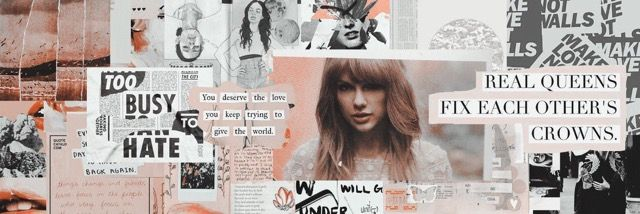

Inicio
Descubrir
Salir
Modo Oscuro

Escuchados Recientemente
Divine Femenine - Mac Miller
The Melodic Blue - Baby Keem
DAMN.- Kendrick Lamar
honestly nevermind - Drake
Lover - Taylor Swift
S.O.S - SZA
Reels
Divine Femenine - Mac Miller
The Melodic Blue - Baby Keem
DAMN.- Kendrick Lamar
honestly nevermind - Drake
Lover - Taylor Swift
S.O.S - SZA